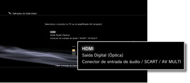
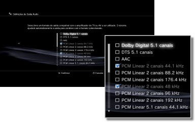
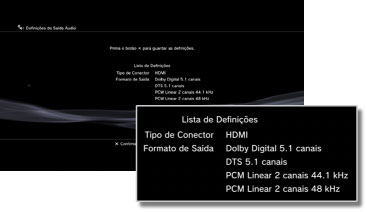

Definições > Definições de Som > Definições de Saída Áudio
Definições de Saída Áudio
Regule as definições de saída de áudio do sistema. Estas definições são utilizadas principalmente quando o sistema está ligado a dispositivos de áudio que suportam saída de áudio digital, tais como amplificadores AV (receptores) para sistemas de entretenimento doméstico.
1. |
Confira os formatos suportados pelo seu dispositivo de saída de áudio. |
|||||||||||||||||||||||
|---|---|---|---|---|---|---|---|---|---|---|---|---|---|---|---|---|---|---|---|---|---|---|---|---|
2. |
Seleccione |
|||||||||||||||||||||||
3. |
Seleccione [Definições de Saída Áudio]. |
|||||||||||||||||||||||
4. |
Seleccione o conector de entrada no dispositivo de áudio. Os números dos canais e os formatos de áudio suportados variam consoante o conector que utilizar. 
|
|||||||||||||||||||||||
5. |
Seleccione os formatos de saída de áudio.  |
|||||||||||||||||||||||
6. |
Verifique as suas definições.  |
|||||||||||||||||||||||
7. |
Guarde as suas definições. |
|||||||||||||||||||||||

 .
.Notas
- O áudio [PCM Linear 2 Canais] está definido para saída a partir de todos os conectores de saída por defeito. Se alterar as definições de saída áudio, o áudio apenas será reproduzido a partir dos conectores que foram definidos.
- Se alterar as definições de saída áudio, o sistema deixará de conseguir emitir áudio a partir de vários conectores de saída simultaneamente. Por exemplo, se o sistema estiver ligado a uma TV através de um cabo HDMI e a um dispositivo áudio através de um cabo óptico digital e alterar para [Saída Digital (Óptica)] em [Definições de Saída Áudio], o áudio deixará de ser emitido pela TV. Para reproduzir o áudio de uma TV, altere a definição para [HDMI] ou seleccione
 (Definições) >
(Definições) >  (Definições de Som) > [Multi-Saída de Áudio] e defina a opção para [Ligado].
(Definições de Som) > [Multi-Saída de Áudio] e defina a opção para [Ligado]. - Se seleccionar [PCM Linear 2 canais 88,2 kHz] ou [PCM Linear 2 canais 176,4 kHz] no passo 5, o som poderá ser intermitente ou poderá não ser emitido a partir de alguns dispositivos áudio.
- Ao utilizar um cabo HDMI, apenas o áudio [Linear PCM 2 canais] será emitido a partir de software de formato PlayStation®2 e PlayStation®. Para emitir áudio Dolby Digital ou DTS, tem de ligar o sistema PS3™ e o dispositivo de áudio com um cabo óptico digital e mudar para [Saída Digital (Óptica)] nas [Definições de Saída Áudio].
- Se um dispositivo que não seja compatível com a norma HDCP (High-bandwidth Digital Content Protection) for ligado ao sistema utilizando um cabo HDMI, não pode ser reproduzido vídeo e/ou áudio do sistema.
Atenção
- Algum software do formato PlayStation®2 ou PlayStation® poderá ter um comportamento no sistema PS3™ diferente que nos sistemas PlayStation®2 ou PlayStation® ou pode não funcionar correctamente no sistema PS3™.
- Além disso, alguns sistemas PS3™ não reproduzem software de formato PlayStation®2. Para obter mais informações, consulte [Tipos de discos reproduzíveis], visite o Web site da SCE da sua região ou consulte a documentação incluída no seu sistema PS3™.